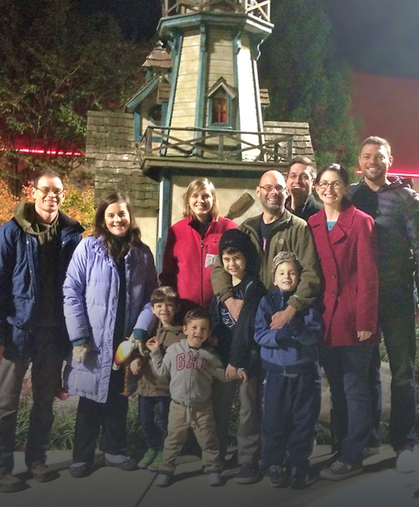

Community Groups
Throughout the week, we meet together in homes to encourage each other, study the Bible, and pray together. These groups give us the chance to go deeper in our lives together and in our walk with Christ. Non-Christians and newcomers are welcome, and most groups provide teaching for children through Kids in Community, too.
